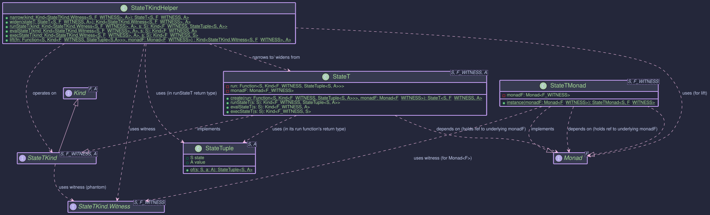

StateT Monad Transformer
The StateT monad transformer is a powerful construct that allows you to add state-management capabilities to an existing monadic context. Think of it as taking the State Monad and making it work on top of another monad, like OptionalKind, EitherKind, or IOKind.
This is incredibly useful when you have computations that are both stateful and involve other effects, such as:
- Potentially missing values (
OptionalKind) - Operations that can fail (
EitherKind,TryKind) - Side-effecting computations (
IOKind)
What is StateT?
At its core, a StateT<S, F, A> represents a computation that:
- Takes an initial state of type
S. - Produces a result of type
Aalong with a new state of typeS. - And this entire process of producing the
(newState, value)pair is itself wrapped in an underlying monadic contextF.
So, the fundamental structure of a StateT computation can be thought of as a function:
S -> F<StateTuple<S, A>>
Where:
S: The type of the state.F: The witness type for the underlying monad (e.g.,OptionalKind.Witness,IOKind.Witness).A: The type of the computed value.StateTuple<S, A>: A simple container holding a pair of(state, value).
Key Classes and Concepts

StateT<S, F, A>: The primary data type representing the stateful computation stacked on monadF. It holds the functionS -> Kind<F, StateTuple<S, A>>.StateTKind<S, F, A>: TheKindrepresentation forStateT, allowing it to be used withhigher-kinded-j's typeclasses likeMonad. This is what you'll mostly interact with when usingStateTin a generic monadic context.StateTKind.Witness<S, F>: The higher-kinded type witness forStateT<S, F, _>. Note that both the state typeSand the underlying monad witnessFare part of theStateTwitness.StateTMonad<S, F>: TheMonadinstance forStateT<S, F, _>. It requires aMonadinstance for the underlying monadFto function.StateTKindHelper: A utility class providing static methods for working withStateTKind, such asnarrow(to convertKind<StateTKind.Witness<S, F>, A>back toStateT<S, F, A>),runStateT,evalStateT, andexecStateT.StateTuple<S, A>: A simple record-like class holding the pair(S state, A value).
Motivation: Why Use StateT?
Imagine you're processing a sequence of items, and for each item:
- You need to update some running total (state).
- The processing of an item might fail or return no result (e.g.,
Optional).
Without StateT, you might end up with deeply nested Optional<StateTuple<S, A>> and manually manage both the optionality and the state threading. StateT<S, OptionalKind.Witness, A> elegantly combines these concerns.
Usage
Creating StateT Instances
You typically create StateT instances in a few ways:
-
Directly with
StateT.create(): This is the most fundamental way, providing the state function and the underlying monad instance.import org.higherkindedj.hkt.Kind; import org.higherkindedj.hkt.optional.OptionalKind; import org.higherkindedj.hkt.optional.OptionalMonad; import org.higherkindedj.hkt.state.StateTuple; import org.higherkindedj.hkt.trans.state_t.StateT; import org.higherkindedj.hkt.trans.state_t.StateTKind; import org.higherkindedj.hkt.trans.state_t.StateTMonad; import java.util.Optional; import java.util.function.Function; // Assume S = Integer (state type), F = OptionalKind.Witness, A = String (value type) OptionalMonad optionalMonad = new OptionalMonad(); Function<Integer, Kind<OptionalKind.Witness, StateTuple<Integer, String>>> runFn = currentState -> { if (currentState < 0) { // Underlying monad F signals absence return OptionalKind.empty(); } // Underlying monad F signals presence of (newState, newValue) return OptionalKind.of(StateTuple.of(currentState + 1, "Value: " + currentState)); }; StateT<Integer, OptionalKind.Witness, String> stateTExplicit = StateT.create(runFn, optionalMonad); // Wrap it as a Kind for monadic operations Kind<StateTKind.Witness<Integer, OptionalKind.Witness>, String> stateTKind = StateTKind.wrap(stateTExplicit); -
Lifting values with
StateTMonad.of(): This lifts a pure valueAinto theStateTcontext. The state remains unchanged, and the underlying monadFwill wrap the result using its ownofmethod.StateTMonad<Integer, OptionalKind.Witness> stateTMonad = StateTMonad.instance(optionalMonad); Kind<StateTKind.Witness<Integer, OptionalKind.Witness>, String> pureStateT = stateTMonad.of("pure value"); // When run with state 10, this will result in Optional.of(StateTuple(10, "pure value"))
Running StateT Computations
To execute a StateT computation and extract the result, you use methods from StateTKindHelper or directly from the StateT object:
-
runStateT(initialState): Executes the computation with aninitialStateand returns the result wrapped in the underlying monad:Kind<F, StateTuple<S, A>>.// Continuing the stateTKind from above: Kind<OptionalKind.Witness, StateTuple<Integer, String>> resultOptionalTuple = StateTKindHelper.runStateT(stateTKind, 10); // Provide initial state 10 Optional<StateTuple<Integer, String>> actualOptional = OptionalKind.narrow(resultOptionalTuple).unwrap(); if (actualOptional.isPresent()) { StateTuple<Integer, String> tuple = actualOptional.get(); System.out.println("New State: " + tuple.state()); // Output: New State: 11 System.out.println("Value: " + tuple.value()); // Output: Value: Value: 10 } // Example with negative initial state (expecting empty Optional) Kind<OptionalKind.Witness, StateTuple<Integer, String>> resultEmptyOptional = StateTKindHelper.runStateT(stateTKind, -5); Optional<StateTuple<Integer, String>> actualEmpty = OptionalKind.narrow(resultEmptyOptional).unwrap(); System.out.println("Is empty: " + actualEmpty.isEmpty()); // Output: Is empty: true -
evalStateT(initialState): Executes and gives youKind<F, A>(the value, discarding the final state). -
execStateT(initialState): Executes and gives youKind<F, S>(the final state, discarding the value).
Composing StateT Actions
Like any monad, StateT computations can be composed using map and flatMap.
-
map(Function<A, B> fn): Transforms the valueAtoBwithin theStateTcontext, leaving the state transformation logic and the underlying monadF's effect untouched for that step.Kind<StateTKind.Witness<Integer, OptionalKind.Witness>, Integer> initialComputation = StateTKind.lift(s -> OptionalKind.of(StateTuple.of(s + 1, s * 2)), optionalMonad); // s -> F<(s', val)> Kind<StateTKind.Witness<Integer, OptionalKind.Witness>, String> mappedComputation = stateTMonad.map( val -> "Computed: " + val, initialComputation ); // Run mappedComputation with initial state 5: // 1. initialComputation runs: state becomes 6, value is 10. Wrapped in Optional. // 2. map's function ("Computed: " + 10) is applied to 10. // Result: Optional.of(StateTuple(6, "Computed: 10")) Optional<StateTuple<Integer, String>> mappedResult = OptionalKind.narrow(StateTKindHelper.runStateT(mappedComputation, 5)).unwrap(); mappedResult.ifPresent(System.out::println); // Output: StateTuple[state=6, value=Computed: 10] -
flatMap(Function<A, Kind<StateTKind.Witness<S, F>, B>> fn): Sequences twoStateTcomputations. The state from the first computation is passed to the second. The effects of the underlying monadFare also sequenced according toF'sflatMap.// stateTMonad and optionalMonad are defined Kind<StateTKind.Witness<Integer, OptionalKind.Witness>, Integer> firstStep = StateTKind.lift(s -> OptionalKind.of(StateTuple.of(s + 1, s * 10)), optionalMonad); // S=Int, F=Opt, A=Int Function<Integer, Kind<StateTKind.Witness<Integer, OptionalKind.Witness>, String>> secondStepFn = prevValue -> StateTKind.lift( s -> { if (prevValue > 100) { return OptionalKind.of(StateTuple.of(s + prevValue, "Large: " + prevValue)); } else { return OptionalKind.empty(); // Second step can also result in empty } }, optionalMonad ); Kind<StateTKind.Witness<Integer, OptionalKind.Witness>, String> combined = stateTMonad.flatMap(secondStepFn, firstStep); // Run with initial state 15 // 1. firstStep(15): state=16, value=150. Wrapped in Optional.of. // 2. secondStepFn(150) is called. It returns a new StateT. // 3. The new StateT is run with state=16: // Its function: s' (which is 16) -> Optional.of(StateTuple(16 + 150, "Large: 150")) // Result: Optional.of(StateTuple(166, "Large: 150")) Optional<StateTuple<Integer, String>> combinedResult = OptionalKind.narrow(StateTKindHelper.runStateT(combined, 15)).unwrap(); combinedResult.ifPresent(System.out::println); // Output: StateTuple[state=166, value=Large: 150] // Run with initial state 5 // 1. firstStep(5): state=6, value=50. Wrapped in Optional.of. // 2. secondStepFn(50) is called. // 3. The new StateT is run with state=6: // Its function: s' (which is 6) -> Optional.empty() // Result: Optional.empty() Optional<StateTuple<Integer, String>> combinedEmptyResult = OptionalKind.narrow(StateTKindHelper.runStateT(combined, 5)).unwrap(); System.out.println("Is empty from small initial: " + combinedEmptyResult.isEmpty()); // Output: true
State-Specific Operations
While higher-kinded-j's StateT provides the core monadic structure, you'll often want common state operations like get, set, modify. These can be constructed using StateT.create or StateTKind.lift.
-
get(): Retrieves the current state as the value.public static <S, F> Kind<StateTKind.Witness<S, F>, S> get(Monad<F> monadF) { return StateTKind.lift(s -> monadF.of(StateTuple.of(s, s)), monadF); } // Usage: stateTMonad.flatMap(currentState -> ..., get(optionalMonad)) -
set(S newState): Replaces the current state withnewState. The value is oftenVoidorUnit.public static <S, F> Kind<StateTKind.Witness<S, F>, Void> set(S newState, Monad<F> monadF) { return StateTKind.lift(s -> monadF.of(StateTuple.of(newState, (Void) null)), monadF); } -
modify(Function<S, S> f): Modifies the state using a function.public static <S, F> Kind<StateTKind.Witness<S, F>, Void> modify(Function<S, S> f, Monad<F> monadF) { return StateTKind.lift(s -> monadF.of(StateTuple.of(f.apply(s), (Void) null)), monadF); } -
gets(Function<S, A> f): Retrieves a value derived from the current state.public static <S, F, A> Kind<StateTKind.Witness<S, F>, A> gets(Function<S, A> f, Monad<F> monadF) { return StateTKind.lift(s -> monadF.of(StateTuple.of(s, f.apply(s))), monadF); }
Example: Simple Stack Operations with StateT<List<Integer>, OptionalKind.Witness, ...>
Let's simulate stack operations where the stack is a List<Integer> and operations might be absent if, for example, popping an empty stack.
import org.higherkindedj.hkt.Kind;
import org.higherkindedj.hkt.Monad;
import org.higherkindedj.hkt.optional.OptionalKind;
import org.higherkindedj.hkt.optional.OptionalMonad;
import org.higherkindedj.hkt.state.StateTuple;
import org.higherkindedj.hkt.trans.state_t.*; // StateT, StateTKind, StateTMonad, StateTKindHelper
import java.util.Collections;
import java.util.LinkedList;
import java.util.List;
import java.util.Optional;
public class StateTStackExample {
private static final OptionalMonad OPT_MONAD = new OptionalMonad();
private static final StateTMonad<List<Integer>, OptionalKind.Witness> ST_OPT_MONAD =
StateTMonad.instance(OPT_MONAD);
// Helper to lift a state function into StateT<List<Integer>, OptionalKind.Witness, A>
private static <A> Kind<StateTKind.Witness<List<Integer>, OptionalKind.Witness>, A> liftOpt(
Function<List<Integer>, Kind<OptionalKind.Witness, StateTuple<List<Integer>, A>>> f) {
return StateTKind.lift(f, OPT_MONAD);
}
// push operation
public static Kind<StateTKind.Witness<List<Integer>, OptionalKind.Witness>, Void> push(Integer value) {
return liftOpt(stack -> {
List<Integer> newStack = new LinkedList<>(stack);
newStack.add(0, value); // Add to front
return OptionalKind.of(StateTuple.of(newStack, (Void) null));
});
}
// pop operation
public static Kind<StateTKind.Witness<List<Integer>, OptionalKind.Witness>, Integer> pop() {
return liftOpt(stack -> {
if (stack.isEmpty()) {
return OptionalKind.empty(); // Cannot pop from empty stack
}
List<Integer> newStack = new LinkedList<>(stack);
Integer poppedValue = newStack.remove(0);
return OptionalKind.of(StateTuple.of(newStack, poppedValue));
});
}
public static void main(String[] args) {
Kind<StateTKind.Witness<List<Integer>, OptionalKind.Witness>, Integer> computation =
ST_OPT_MONAD.flatMap(v1 -> // v1 is Void from push(10)
ST_OPT_MONAD.flatMap(v2 -> // v2 is Void from push(20)
ST_OPT_MONAD.flatMap(popped1 -> // popped1 should be 20
ST_OPT_MONAD.flatMap(popped2 -> { // popped2 should be 10
// Do something with popped1 and popped2
System.out.println("Popped in order: " + popped1 + ", then " + popped2);
// Final value of the computation
return ST_OPT_MONAD.of(popped1 + popped2);
}, pop())
, pop())
, push(20))
, push(10));
List<Integer> initialStack = Collections.emptyList();
Kind<OptionalKind.Witness, StateTuple<List<Integer>, Integer>> resultWrapped =
StateTKindHelper.runStateT(computation, initialStack);
Optional<StateTuple<List<Integer>, Integer>> resultOpt =
OptionalKind.narrow(resultWrapped).unwrap();
resultOpt.ifPresentOrElse(
tuple -> {
System.out.println("Final value: " + tuple.value()); // Expected: 30
System.out.println("Final stack: " + tuple.state()); // Expected: [] (empty)
},
() -> System.out.println("Computation resulted in empty Optional.")
);
// Example of popping an empty stack
Kind<StateTKind.Witness<List<Integer>, OptionalKind.Witness>, Integer> popEmptyStack = pop();
Optional<StateTuple<List<Integer>, Integer>> emptyPopResult =
OptionalKind.narrow(StateTKindHelper.runStateT(popEmptyStack, Collections.emptyList())).unwrap();
System.out.println("Popping empty stack was successful: " + emptyPopResult.isPresent()); // false
}
}
Relationship to State Monad
The State Monad (State<S, A>) can be seen as a specialized version of StateT. Specifically, State<S, A> is equivalent to StateT<S, Id, A>, where Id is the Identity monad (a monad that doesn't add any effects, simply Id<A> = A). higher-kinded-j provides an Id monad. State<S, A> can be seen as an equivalent to StateT<S, Id.Witness, A>.
Further Reading
- State Monad: Understand the basics of stateful computations.
- Monad Transformers: General concept of monad transformers.
- Documentation for the underlying monads you might use with
StateT, such as:
Using StateT, helps write cleaner, more composable code when dealing with computations that involve both state and other monadic effects.